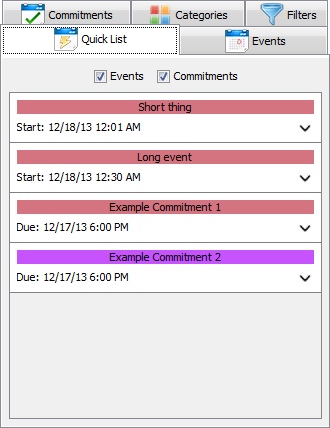
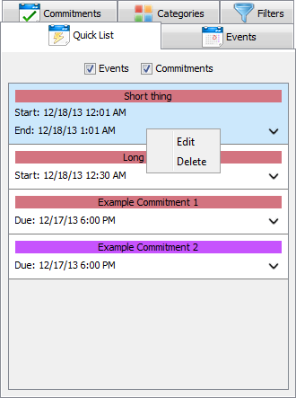

The QuickList allows the user to view and manage commitments that has been scheduled for a certain days on the calendar. It gives the user the quick view of all the commitments scheduled for the week. Commitments can be updated and deleted from the same tab by right clicking on the commitment.
To use the QuickList, locate the QuickList button from the calendar on the upper right corner, next to the Commitment
tab. The user has the option to select either events or commitments for display.

Clicking on the arrow in the lower-right corner any of the events or commitments will open a detail view.
To edit a commitment or event, first locate it on the QuickList Panel.
Right click and select the edit option.

This brings the update view of the commitment/event. The fields
will populate with the current details about the commitment/event. Edit the desired fields and
press the Update Commitment/Event button. This will close the tab and bring you back to
the standard view.
To delete a commitment/event, first locate the commitment/events on the QuickList Panel.
Highlight the commitment/event by clicking on it.
Once the commitment/event is highlighted, locate the Delete button or right click on the highlighted
commitment/event to decide whether to edit it or delete.
Multiple commitments/events can be deleted at a time. To delete multiple commitments/events,
first select all of the commitments/events to be deleted. To select multiple commitments,
hold the Ctrl/command key and click on the desired commitments/events.
Once the commitments/events are highlighted, locate the Delete Commitment/Event button.
Press this button to delete the commitments/events.